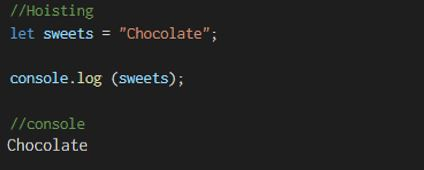
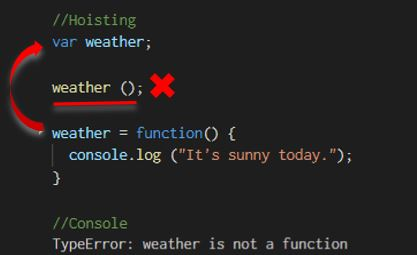
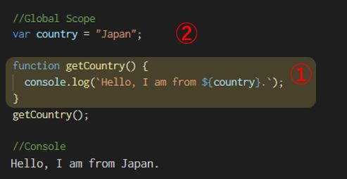
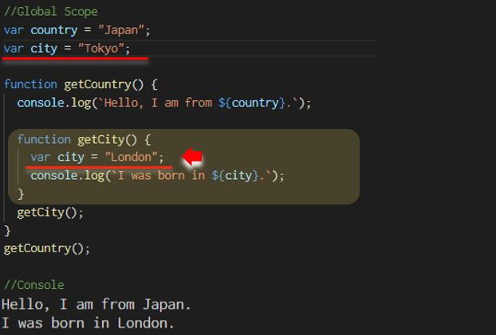
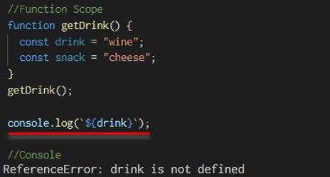
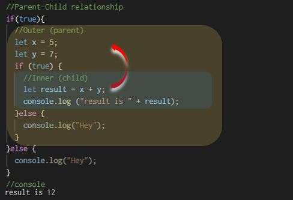
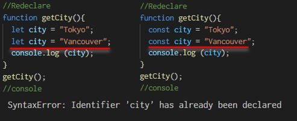

Javascript as one of the most popular programming language in the world, is used to create dynamic websites. You can apply fancy animations to your websites, move the contents of it, create photo slideshows, or even connect to the server and control the data. In this article, I will share some essential JavaScript concepts that are commonly used by all developers and you cannot miss!☺
01
-Hoisting-
Hoisting is a JavaScript Mechanism where variable declaration and function declaration move to the top of their scope before execution.
In this section, both variable declaration and function declaration will be covered.
#1 Variable Declaration :
Example : OK
The code given below will give you "Chocolate" in your console.
Example : NG
In the example below, you get an erorr in your console because the program doesn't know the value of "sweets".
Why does this happen?
What's happening behind the scene is that before JavaScript actually runs, the compiler takes all the variable declarations and function declarations and moves them all the way to the top. Then it starts reading the scripts.
The compiler takes "let sweets", move it to the top. When you console it to the log, you will get "undefined" because it doesn't have a value at the moment. When you declare a variable, the default value is "undefined". After the value is added, "Chocolate" will be shown on your console.
#2 Function Declaration :
The same thing happens with the function declaration. Let's take a look at two codes below.
Example : OK - Pattern 1
With the code given below, naturally you will get "Hello everyone!" in your console.
Example : OK - Pattern 2
Now, take a look at another example below. Even if you call the function before declaration, you still get "Hello everyone!" in your console, as the compiler takes the function declaration to the top. Awesome!
How about this? Does it work?

The answer is "NO". Why? What is happening is that the compiler takes only "var weather" to the top before execution.
As you can see now, "weather" is a variable, NOT a function. Hence the error message.
02
-Scope-
Scope defines the accessibility of variables, functions and objects in your code when it is running.
There are only two types of scopes in JavaScript. One is Global Scope and the other is Local Scope . It is important to have clear understanding of which variables you have access to because it helps you to separate logic in your code.
#1 Global Scope :
It is declared in the root of your file/document and you have access to this anywhere in your code.
The example above will give you "Hello, I am from Japan", which has "Japan" as a variable included. Great! What happens here is that the function, "getCountry()" actually checks to see if ${country} is available inside the function block. And it is not in this case. What it does next is that it looks one layer above and go find the variable "country". Now it is available with the value, "Japan". That is how the function looks up the variable.
What if multiple functions are nested?
Let's take a look at the example below. The function "getCity()" is inside the function "getCountry()". How does the function "getCity()" check the variable?
First, it checks if ${city} is declared inside the function itself. It is not declared in this case. Now then it moves one lebel up to find ${city}. Again it is not yet declared. Finally it goes outside the function "getCountry(). Now it is able to find the value, "Tokyo". Good.
One more interesting thing
When you declare another variable, "var city = "London"; inside the function getCity(), which value does the function take, Tokyo or London?
The answer is "London"! What it does behind the scene is that it checks to see if the variable is available inside and it is in this case, therefore, it will not go up anymore.
#2 Local Scope
Local Scope is declared either inside functions or curly braces {}. The fundamental concept is that variables inside the local scopes are accessible only within the scope. However there are always exeptions with special cases applied. We will cover that part later on. For now, in the example below, from each Local Scope, you cannot access to other Local Scopes. And from "Global Scope", all three Local Scopes are NOT accessible. That said, the example below will throw you an error, "fullName is not defined".
There are two kinds of local scopes: Function scope and Block scope. Also Lexical Scoping will be covered as an additional topic.
・2-1 Function Scope :
JavaScript uses Function Scope, meaning the scope is established by functions. Function scope is declared inside the function and available only inside the function. This means that variables having the same name can be used in several differnt functions. This is because each function has its own scope and they are not accessible in other functions. When you run the code below, you will get "Let's drink wine and have some cheese" as natural.
One thing you also need to remember is that all your variables functionally scoped that are inside the function cannot be used outside. Let's take a look at the example below. If you try to console log "${drink}" outside the function getDrink(), It will not work and throw you an error.
However, if you move "const drink = "wine" to the outside of the function, it will work just fine. Because the function itself keeps searching the variable until it finds one."
・2-2 Block Scope :
Block Scope is the area within any of conditional statements and loop statements such as if, else, switch, for, and while. In general, everything sparated with curly braces {} is considered as a block. Let's see two examples below:
Both codes returns to you "10"!? Why does the right one work? In local scope, isn't a variable available only inside the scope? It doesn't make sense because when it comes to the function scope, you cannot have access to the variable inside the function. "var" is the exeption of the concept of Local Scope.
Keyword: let and Const
The reason of this contradicting situation is because of the hoisting in JavaScript, which is applied to "var". The keyword "var" is considered as a universal keyword. This causes the mess in your code and might create confusion. The rule should be if you create a block level statement, you shouldn't be able to access from outside. How can we fix this? Actually this Block Scope was introduced in ES6 with the let and const keyword which can fix this contradicting flow. let's change the keyword "var" to "let" and see what will happen.
Great!! It works as expected. When you write the console.log statement inside if statement, you will get "10" as a value of "count". While, if you move the console.log statement outside of the if statement, you will get an reference error.
Tips for ES6
Since a universal "var" can confuse the JavaScript scope concept, it is recommended to use "let" or "const" instead of "var" inside function or block statements. The difference between "let" and "const" will be covered in 03. Variavle Isolation section.
Additional Topic - Lexical Scoping :
In JavaScript, when you write some nested statements or functions, the child scope have access to the variables defined in the parent scope, but NOT vice-versa. Lexical scoping is often discussed with Function scope, but the concept of parent-child relationship can also be applied to Block statements.
In the code given below, the function named "innerFunction()" can access to the variable "outer" which is declared in the lexical scope of innerFunction();. As such, you will see "Here is the lexical scope" in your console.

However, let's take a look at another example below. The outer function named "outerFunction()" does not have access to the inner function’s variable, "const inner". Then it will throw you an reference error.
Lastly, here is the code for a block statement. The code given below will return you "result is 12" in your console because "let x" and "let y" which are declared in the outer area (parent scooe) and are accessible from the inner area (child scope).
On the contrary, if you try to console log "sum" in the outer area which is declared in the inner area, it will throw you an reference error. Just to recap, if you change the keyword "let" to "var" in the block statement (NOT IN THE FUNCTION), you have access to "sum" in the inner area thanks to the help of hoisting concept applied to "var" keyword.
*Note: the value of "var sum" can be either "undefined" or "12" depending on where you write the console.log statement.
Let's summarize the Scope
Since the scope concept can easily get people confused, here is the summary of what is covered in this article.
03
-Variable Isolation-
A variable is a type of container that is used in Javascipt in order to store data inside of.
The scope can isolate the variables, which means you can use the variables with the same names in multiple scopes. Here we cover three types of variables: var, let, and const.
Variables and Block
In JavaScript, there are three types of keywords to declare a variable. The difference between those three are based on the scope, hoisting and reassignment of values.
| Keyword | Scope | Hoisting | Reassign | Redeclare |
|---|---|---|---|---|
| var | Function Scope | Yes | Yes | Yes |
| let | Block Scope | No | Yes | No |
| const | Function Scope | No | No | No |
Reassign
"Reassign" means adding the value in your code based on your logic. Let's take a look at the example below. If you use "let" keyword, even after you add the value "London", it can be changeable. However in case of "const", it cannot be changed later on. If you try to change it, it will throw you a Type error.

Redaclare
With "let" and "const", it is not allowed to declare the same variables in the same scope. It will throw you a syntax error shown below. With "var", you can re-declare the same variable.
You may be wondering which of the three you should use in your code. A commonly accepted practice is to use "const" as much as possible, and let in the case of loops and reassignment . In general, it is better to avoid using "var" becuase it might cause an unexpected reassignment in your code.
To be updated....